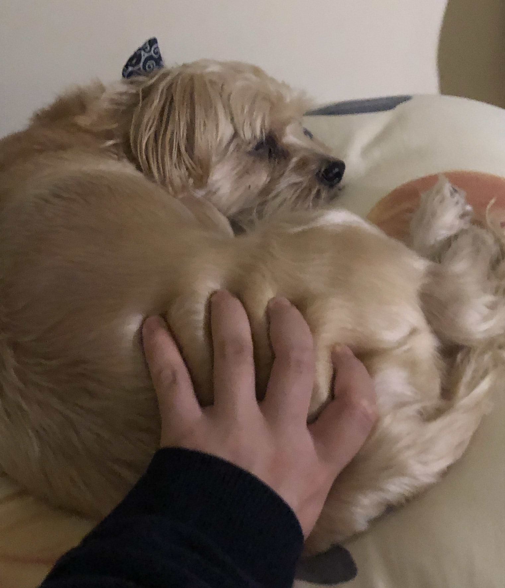
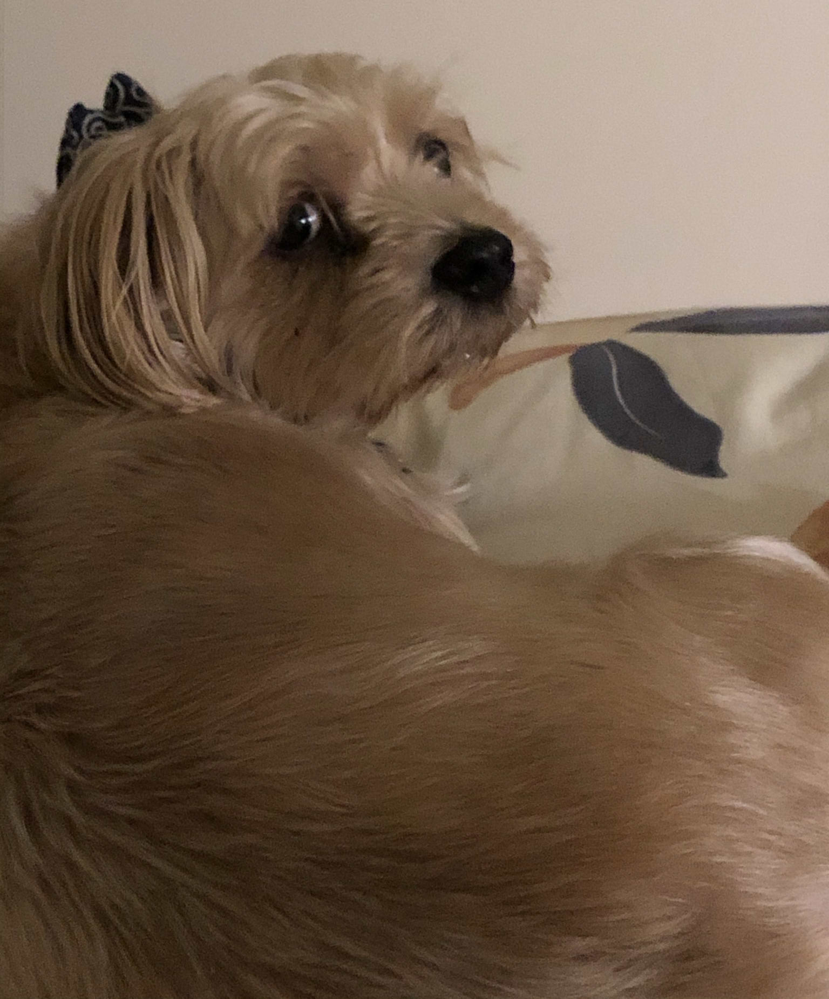

Rosie started from humble beginnings, at a shelter where she was the only dog small enough to fit into the ridiculously tiny apartment I lived in. When I got her she was only 4 years old, which is actually like a third of her life, but to me she was a baby. On October 14th I took Rosie home with me in my backpack for the low, low cost of 200$. You can see the first ever photo of her here, thanks to the shelter. she is so beautiful....
Rosie was my first real dog as an adult. I had my own as a teen, his name was Cola, but that's a story for another time, this page is about Rosie. She lived with me through three apartments and 4 years. I loved her endlessly and I miss her everyday, she was and will always be my baby, I'm joking around a lot but she was a very special, particularly tempermental dog, and she was mine.
 
photos taken before and after a crime...to feel betrayal...just like a person
I could try and seriously describe Rosie's personality, but she is such an unserious and grumpy dog. So let's keep it light with a quick synopsis and a fun chart below. Rosie was a dog who picked and chose when she had the tempermant of a puppy or a geriatric old man. She was simultaneously anxious and unbothered. She liked meeting new people until she didn't and she loved ripping the squeaky out of her toys. She's like if a mean girl was a dog with the memory of what it was like to be human and also 68yrs old.
| likes | dislikes |
|
|
© |
coding & all content © benny candie, 2024 an exhaustive list of credits can be found here |